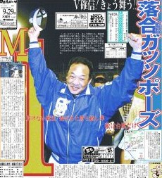

これが目に入らぬか！

落合監督が就任したとき、いきなり「今期はトレードゼロ、選手が能力を10％底上げすれば充分優勝はねらえる」と宣言した。
それを聞いたとき、正直、（え〜、２年続けてＢクラスだぜ。選手はウレシイかも知れないけど、補強もしないで大丈夫かいな....）と思った。それが見事なこの結果。
落合選手は、フリーエージェント宣言で、中日から巨人移籍した。あとで聞くと、中日と巨人では提示金額に億単位の差があったそうだ。しかし当時はそんなこと分からない。そこで中日ファンの中には、どこかに（中日を見限って....）という気持ちがあった。いまとなっては、そんな気分はどっかに吹っ飛んで、名古屋は落合監督一色。
女房は名古屋生まれの名古屋育ち。小さい頃から（中日ファン以外の人とは結婚しない）と決めていたくらいのコテコテの中日ファン（σ(-_-)←中日ファンで良かった、と云っておこう....）。
星野氏が阪神の監督になったとき、σ(-_-)は（おおいに結構。好成績をアガてくれればますます結構）と思った。しかし家人は、いまだに星野監督を「裏切り者」と云って許さない。(-_-；
そんな女房なので、落合監督就任にσ(-_-)より釈然としない気持ちを持っていた。ところが、いまではすっかり落合信者。スポーツニュースなどで落合監督が映ると、うっとりと眺めている。(笑)
中日はリーグ優勝は何回もしている。しかし日本シリーズの優勝は、フォークの杉下を擁した昭和29年だけ。今年優勝すれば半世紀ぶりの出来事。落合監督の株がウナギ登りするのは間違いないが、女房なんぞは神棚に落合監督の写真を飾る準備をしている。
|